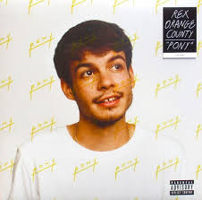

Welcome to My Music Rotation
This wiki is dedicated to the five artists I listen to the most. It covers a mix of OPM, R&B, and Pop.
Contents
About the Wiki
Music is an art form and cultural universal that organizes sound—and sometimes silence—using elements like pitch (melody/harmony), rhythm, and timbre. It is created through voice or instruments to express emotion, create beauty, or convey meaning. Music is defined widely, but generally requires organized sound.
I created this website to show everyone my music taste. It documents the discography and biography of my favorite song artists and their musics.
Artist Summary
Here is a quick breakdown of who my favourite artists are and who you will see in this website:
-
 Arthur Nery: Smooth OPM R&B.
Arthur Nery: Smooth OPM R&B.
-

Rex Orange County: Indie Pop and emotional lyrics. - Daniel Caesar: Soulful melodies.
-
 Keshi: Lo-fi hip hop beats.
Keshi: Lo-fi hip hop beats.
-
 Bruno Mars: Funk, Pop, and absolute bangers.
Bruno Mars: Funk, Pop, and absolute bangers.